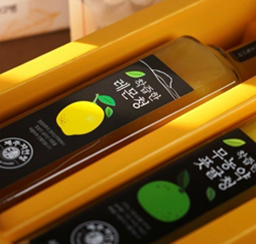

济州生活
-
 休闲产业从汉拿山到大海，从观光到体验之旅。吸引国内外游客的济州岛休闲产业
休闲产业从汉拿山到大海，从观光到体验之旅。吸引国内外游客的济州岛休闲产业 -
亚热带农作物产业 第二篇同心合意放光明，热带及亚热带农作物的社会农场“空心菜农业公司法人”韩国家庭中有33万户是跨国婚姻家庭，占总体的1.6%，而跨国婚姻家庭的成员已近100万名。随着转换为多元文化社会，人们对于热带及亚热带农作物的需求也在逐渐增加。但是，依然存在着种族歧视和移民女性的人权问题等社会问题。有一家以韩语名称中寓意“同心合意放光明”的蔬菜“空心菜”作为法人名称，和济州岛移民女性一起主导食物创新的公司，那就是通过济州岛亚热带蔬菜的栽培、流通、体验、加工等，希望成为韩国第一农业公司的“空心菜农业公司法人”。